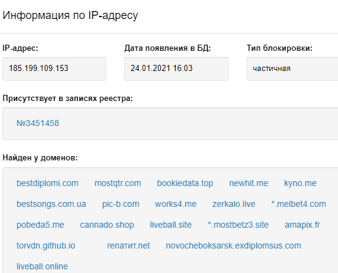
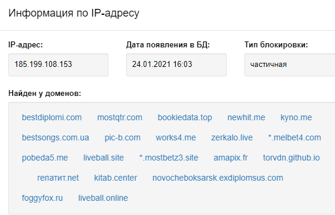

Не открывается сайт http://releases.yourok.ru/
Антизапрет установлен на роутере Микротик. Конфигурация DNS установлена автоматическая.
NSLOOKUP выдает несколько адресов этого сайта. Часть этих адресов находится в списке блокировки.
Провайдер подтвердил, что адрес заблокирован.
Трассировка показывает, что маршрут идёт через оборудование провайдера, а не заворачивается в VPN Антизапрета:
Трассировка маршрута к releases.yourok.ru [185.199.111.153]
с максимальным числом прыжков 30:
1 7 ms 1 ms 2 ms router.lan [192.168.88.1]
2 4 ms 1 ms 1 ms 10.255.255.254
3 * * * Превышен интервал ожидания для запроса.
4 * * * Превышен интервал ожидания для запроса.
Пример нормальной трассировки через Антизапрет:
Трассировка маршрута к lostfilm.tv [10.224.222.71]
с максимальным числом прыжков 30:
- 1 1 ms 1 ms <1 мс router.lan [192.168.88.1]*
- 2 215 ms 178 ms 994 ms 10.224.222.71*
- 3 380 ms 216 ms 309 ms 10.224.222.71*
- 4 211 ms 138 ms 130 ms 10.224.222.71*
Ни один из адресов не присутствует в Реестре, соответственно, не должен быть заблокирован. В Реестре есть только сайт гепатит.net, который использует такие же IP-адреса, но тип его блокировки установлен по домену, а не по IP-адресам.
Со всех моих провайдеров сайт открывается. Обращайтесь к вашему провайдеру, если не поможет — в Роскомнадзор.


Провайдер показал вот эти данные (см. картинку).
Так что вроде как заблокирован, и даже регистрационный номер есть.
Как давно вы обращались к провайдеру? IP-адрес 185.199.108.153, представленный на скриншоте, хоть как-то числился в Реестре до 07.12.2021, последние 4 месяца он отсутствует в базе.
В данный момент есть запись о заблокированном сайте гепатит.net три из четырёх IP-адресов которого совпадают с releases.yourok.ru, но тип блокировки blockType="domain" не даёт права вашему провайдеру их блокировать.
Вот запись из провайдерской выгрузки Роскомнадзора по состоянию на сегодняшний день:
<content id="3451458" includeTime="2021-07-19T14:13:07" entryType="1" blockType="domain" hash="3B835D92A337B3AA0B672C26C6EF7E50">
<decision date="2021-07-12" number="2021-07-08-445-ПЛ" org="Росздравнадзор"/>
<domain><![CDATA[гепатит.net]]></domain>
<ip>185.199.109.153</ip>
<ip>185.199.110.153</ip>
<ip>185.199.111.153</ip>
</content>
Если ваш провайдер уверен в своей правоте (а он неправ), вы можете сообщить об излишней блокировке в Роскомнадзор: https://rkn.gov.ru/treatments/ask-question/ (оказание услуг связи → интернет → неудовлетворительное качество услуг по доступу к информационным ресурсам сети интернет).
Да вот только что доказывал свою правоту провайдеру, и меня забанили